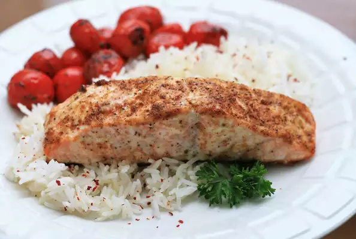

A super easy way to cook salmon with Old Bay® seasoning. The mayonnaise keeps the fish very tender.
Recipe by Joni's Busy Kitchen.
Ingredients
- 1 serving cooking spray
- 1 (2 pound) salmon fillet
- 2 tablespoons mayonnaise
- tablespoons seafood seasoning (such as Old Bay®)
Back to Top
Back to Home page